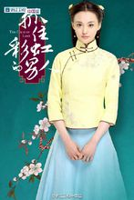
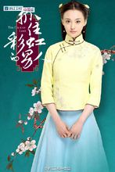

演艺经历
2008年，郑爽在北京电影学院07-08年度优秀学员评选中获得了优秀学生三等奖学金；随后，他又凭借在年度话剧作品《我与江姐》中饰演女一号小爽而获得了最佳指导奖；同年，郑爽还在北影第二学年的年度学期片段汇报作品《家》中饰演了女主角瑞钰；此外，她还相继参与了北京电影学院形体大赛；以及，湖南卫视与搜狐网联合举办的杉菜一号选拔赛。
2009年，郑爽完成了个人的首部影视作品，她在校园青春偶像剧《一起来看流星雨》中饰演了坚强乐观又率性而为的女主角楚雨荨，并演唱了插曲《爱的华尔兹》，而该剧在播出后则以平均收视率1.9%、最高收视率3%、收视份额7.73%的成绩从开播到结束一直占据全国同时段电视剧收视第一的位置，郑爽个人也凭借该剧开始在影视领域崭露头角。
2010年，郑爽继续主演流星雨系列剧《一起又看流星雨》，该剧在播出后则刷新了第一部创下的收视记录，而郑爽则凭借此剧入围第25届中国电视金鹰节电视剧最佳女演员，并成为了该届最年轻的候选人；同年7月，郑爽完成了个人的银幕处女作，她在陈嘉上执导的古装魔幻片《画壁》中饰演了如花似玉且纯情率真的仙女牡丹，而郑爽则凭借该片获得了香港电影导演协会新演员金奖和第31届香港电影金像奖最佳新人的提名；同年11月，郑爽在都市动作青春片《无极限之危情速递》中以俏丽短发造型出镜并饰演了女主角小安；同时，她还为该片演唱了主题曲《极限爱恋》。
2011年，郑爽作为应届毕业生从北京电影学院顺利毕业；与此同时，她主演了古装宫廷传奇剧《武则天秘史》，并在剧中饰演了拥有传奇人生的太平公主；4月，郑爽还在古装宫廷偶像剧《凰图腾》中饰演了单纯善良且淳朴乖巧的女主角宁彩蝶；7月，她还主演了古装宫廷传奇剧《太平公主秘史》，并首次在电视剧中分饰两角，饰演性格截然不同的太平公主和安公主；此外，郑爽还客串出演了浪漫商战悬疑剧《童话二分之一》。
2012年，郑爽主演了新美学概念时尚剧《胜女的时代》，并在剧中再次一人分饰两角，饰演性格有很大不同的双生姐妹花穆小妍和方亦菲。
2013年，郑爽先是客串出演了古装武侠悬疑剧《少年四大名捕》；随后，她又与众多艺人合作主演了根据同名游戏改编的古装仙侠偶像剧《古剑奇谭》，并在剧中饰演了甜美漂亮又俏皮可爱的小狐女襄铃，该剧在播出则取得了全国同时段电视剧收视第一的成绩，而其个人也凭借此剧获得了第13届电视华鼎奖全国观众最喜欢的影视演员奖；同年，她还主演了古装美食偶像剧《美人私房菜》，其在剧中则饰演了善良勤奋又独立坚强的美丽厨娘宋玉蝶 。
2014年，郑爽主演了由桐华监制的民国爱情励志剧《抓住彩虹的男人》，并在剧中饰演了性格活泼开朗却又命运坎坷的女主角吴彩虹，凭借该剧郑爽获得了第19届华鼎奖中国近现代题材电视剧最佳女演员；随后，她又接连客串出演了古装神话喜剧《天天有喜2之人间有爱》和都市网络喜剧《极品女士第三季》；8月，郑爽与众多艺人共同主演了古装武侠探案剧《五鼠闹东京》，其在剧中则饰演了美貌出众且武功高强的女侠丁月华；10月，她在年代热血偶像剧《偏偏喜欢你》中特别出演了温婉大方又知书达理的留德心理学博士萧晗；年底，郑爽还主演了爱情穿越剧《相爱穿梭千年，而她在剧中则饰演了郁郁不得志的现代女演员林湘湘；并为该剧演唱了主题曲《不能忘》。
2015年2月，郑爽登上了美国时尚杂志《Vogue》的正刊内页，并成为第一位登上该杂志美丽秘诀栏目的90后女艺人；4月，郑爽开始参加湖南卫视明星姐弟自助远行真人秀节目《花儿与少年第二季》，并成为该节目中的“五妹”，担当起了第一任导游的责任；与此同时，她还主演了清装宫廷爱情剧《寂寞空庭春欲晚》，并在剧中饰演了淡然处世且饱读诗书的女主角卫琳琅，而该剧在播出后则以CSM52平均收视率1.174%的成绩，连续十六天登顶黄金档电视剧榜首；年底，郑爽出演了古装神话动作片《悟空传》，并在片中饰演了仙气十足，一直坚守爱情的仙女阿月，而该片在次年上映后则取得了接近7亿人民币的票房成绩。
2016年，郑爽参加了湖南卫视互动孝道真人秀节目《旋风孝子》，而她在节目中则与父亲共同生活了六天五夜，并通过一系列有趣的任务来表达对父亲的爱；与此同时，她还主演了年代爱情剧《翡翠恋人》，并在剧中饰演了情感迷糊却在经历打击后华丽蜕变的女主角沈晨曦；2月15日，其与天娱传媒合约到期，并宣布不再续约，转而成立个人工作室，此后所有工作都由工作室独立完成；8月，郑爽领衔主演了都市青春爱情剧《夏至未至》，她在剧中饰演了温暖内向的高中女生立夏；随后，其主演的都市爱情偶像剧《微微一笑很倾城》上星播出，郑爽在剧中饰演了容貌明艳倾城又睿智开朗的计算机系花贝微微，该剧在播出后网络播放量则突破了100亿次，并引发了颇高的网络热议度和媒体关注度，而她个人也因此获得了广泛好评；9月，郑爽在南都娱乐周刊发起的“90后”女艺人综合性评选活动中，与周冬雨、关晓彤、杨紫共同被评为“90后四小花旦”。
2017年，郑爽的第一部影视作品是与罗晋搭档主演的现代都市爱情剧《为了你，我愿意热爱整个世界》；7月，郑爽确定领衔主演现代都市爱情剧《悲伤逆流成河》；8月19日，她的首本书籍作品《郑爽的书》在上海举行首场签售会，该书则记录了其出道后的心路历程；9月22日，郑爽还在这一年的福布斯中国名人榜中排名第三十九；10月29日，其出演的星素演技PK节目《演员的诞生》在浙江卫视播出，她在现场则重现了电影《我的父亲母亲》中章子怡的表演片段；次日，郑爽确定在与佟大为搭档主演的谍战剧《绝密者》中饰演女主角苏嘉蔓。
2018年，郑爽以战队经理人的身份参加了机器人格斗真人秀《这！就是铁甲》；2月20日，其主演的都市科幻爱情剧《我的保姆手册》在上海开机，并于11月11日播出，她在剧中饰演的AI少女saori，看起来天真单纯，却有着鬼马精灵的头脑，而该剧也是其首次担任艺术总监，并深度参与剧本创作的影视作品；6月，郑爽领衔主演了都市青春励志剧《青春斗》；8月，她还入选了福布斯中国“30位30岁以下精英”榜（娱乐领域）。
2019年，郑爽以固定嘉宾身份出演了芒果TV情感观察真人秀《女儿们的恋爱第二季》。
影视作品中饰演的角色
 
